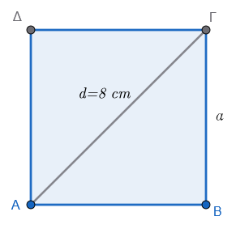
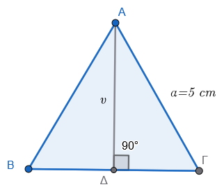
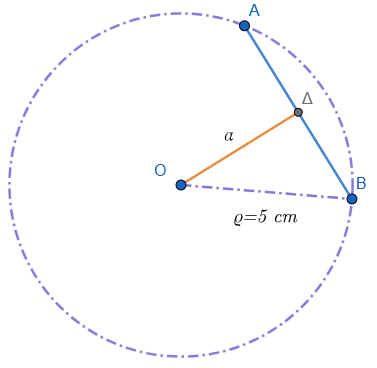
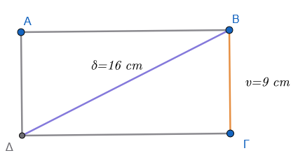
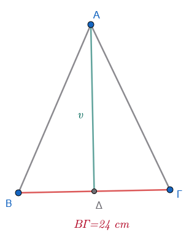
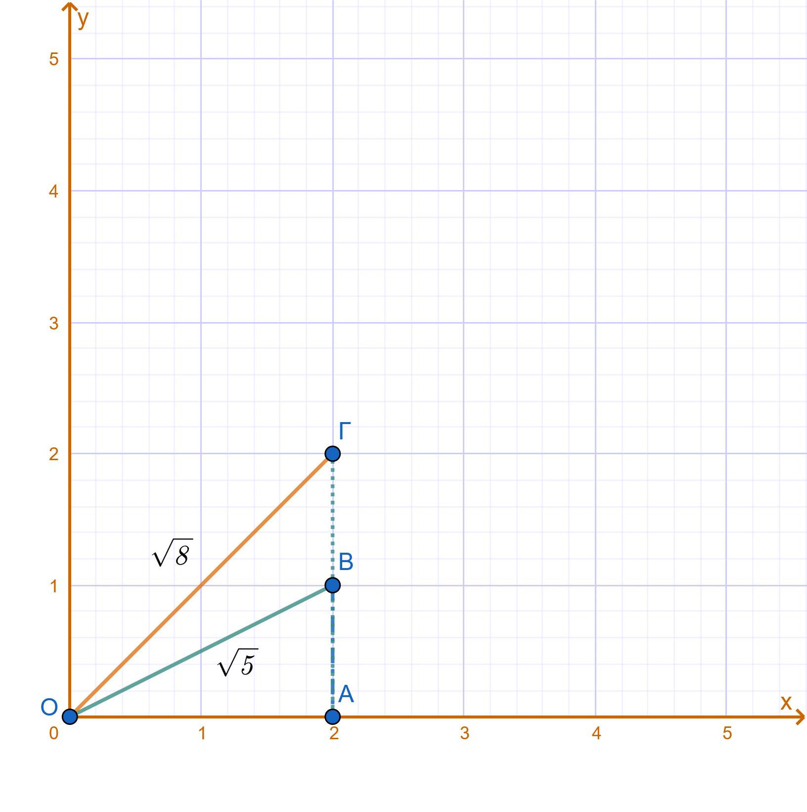
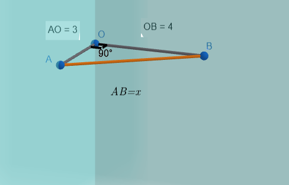

1 Προβλήματα
1.1 Α. Λυμένα Προβλήματα
- Πρόβλημα Γεωμετρίας (Πλευρά Τετραγώνου): Να βρείτε την πλευρά ενός τετραγώνου, του οποίου η διαγώνιος είναι 8 cm.

Λύση:
Έστω \(a\) η πλευρά του τετραγώνου. Σύμφωνα με το Πυθαγόρειο θεώρημα στο ορθογώνιο τρίγωνο που σχηματίζεται από δύο πλευρές και τη διαγώνιο \(d\), ισχύει: \(a^2 + a^2 = d^2\). Άρα \(2a^2 = 8^2 \Rightarrow 2a^2 = 64 \Rightarrow a^2 = 32\). Η πλευρά θα είναι η τετραγωνική ρίζα \(a = \sqrt{32}\). Από τους πίνακες ή με υπολογισμό, βρίσκουμε \(a \approx 5,65\) cm.
- Πρόβλημα Ζωής (Εμβαδόν Οικοπέδου): Ένα οικόπεδο σχήματος τετραγώνου έχει εμβαδόν \(E = 2809\ \text{m}^2\). Πόση είναι η πλευρά του και πόση η περίμετρός του;.
Λύση:
Το εμβαδόν τετραγώνου δίνεται από τον τύπο \(E = a^2\), επομένως η πλευρά είναι \(a = \sqrt{2809}\). Εκτελώντας τον αλγόριθμο της ρίζας ή αναζητώντας στον πίνακα, βρίσκουμε \(a = 53\) m. Η περίμετρος είναι \(P = 4a = 4 \cdot 53 = 212\) m.
- (Ύψος Ισοπλεύρου Τριγώνου): Να υπολογιστεί το ύψος ενός ισοπλεύρου τριγώνου αν γνωρίζουμε ότι η πλευρά του είναι \(a = 5\) cm.

Λύση:
Το ύψος \(v\) ενός ισοπλεύρου τριγώνου δίνεται από τον τύπο \(v = \dfrac{a\sqrt{3}}{2}\). Αντικαθιστώντας το \(a = 5\), έχουμε \(v = \dfrac{5\sqrt{3}}{2}\). Επειδή η \(\sqrt{3} \approx 1,732\), το ύψος είναι \(v \approx \dfrac{5 \cdot 1,732}{2} = 4,33\) cm.
- Πρόβλημα Γεωμετρίας (Ορθογώνιο Τρίγωνο): Σε ορθογώνιο τρίγωνο οι κάθετες πλευρές είναι \(20\) m και \(15\) m. Να βρεθεί η υποτείνουσα.
Λύση:
Σύμφωνα με το Πυθαγόρειο θεώρημα \(\alpha^2 = \beta^2 + \gamma^2\). Άρα \(\alpha^2 = 20^2 + 15^2 = 400 + 225 = 625\). Η υποτείνουσα είναι \(\alpha = \sqrt{625} = 25\) m.
- Πρόβλημα Κύκλου (Ακτίνα από Εμβαδόν): Ένας κυκλικός δίσκος έχει εμβαδόν \(E = 314\ \text{cm}^2\). Να βρεθεί η ακτίνα του (χρησιμοποιήστε \(\pi \approx 3,14\)).
Λύση:
Ο τύπος του εμβαδού είναι \(E = \pi R^2\). Άρα \(314 = 3,14 \cdot R^2 \Rightarrow R^2 = \dfrac{314}{3,14} = 100\). Η ακτίνα είναι \(R = \sqrt{100} = 10\) cm.
1.2 Β. Προβλήματα για λύση (Ασκήσεις)
- Να βρείτε τη διαγώνιο ενός τετραγώνου που έχει πλευρά \(6\) cm.
- Η υποτείνουσα ενός ορθογωνίου τριγώνου είναι \(12\) cm και η μία κάθετη πλευρά του είναι \(9\) cm. Να βρείτε την άλλη κάθετη πλευρά και το εμβαδό του.
- Μια χορδή \(ΑΒ\) απέχει από το κέντρο κύκλου \(3\) cm. Αν η ακτίνα του κύκλου είναι \(5\) cm, να βρείτε το μήκος της χορδής \(ΑΒ\).

- Να υπολογιστεί το εμβαδόν ενός ορθογωνίου παραλληλογράμμου που έχει διαγώνιο \(16\) cm και ύψος \(9\) cm.

- Η περίμετρος ενός ισοσκελούς τριγώνου είναι \(54\) cm και η βάση του \(24\) cm. Να υπολογίσετε το ύψος και το εμβαδό του.

- Αν αυξήσουμε την πλευρά ενός τετραγώνου κατά \(5\) m, το εμβαδόν του αυξάνει κατά \(605\ \text{m}^2\). Να βρείτε την αρχική πλευρά του τετραγώνου.
- Αν ελαττώσουμε την πλευρά ενός τετραγώνου κατά \(4\) m, το εμβαδόν του ελαττώνεται κατά \(368\ \text{m}^2\). Πόση είναι η πλευρά του τετραγώνου;.
- Στην εξίσωση \(y = \sqrt{(x+2)^2 - 8}\), να βρείτε την τιμή του \(y\) όταν \(x = 5\).
- Να κατασκευαστεί ορθογώνιο τρίγωνο που να έχει κάθετες πλευρές τις \(\sqrt{5}\) cm και \(\sqrt{8}\) cm.

- Ένας εργάτης θέλει να χτίσει δύο κάθετους μεταξύ τους τοίχους. Για να βεβαιωθεί ότι ο ένας τοίχος είναι κάθετος στον άλλο, μέτρησε τμήμα \(3\) m στον έναν τοίχο από την ευθεία τομής τους και \(4\) m στον άλλον. Πόση πρέπει να είναι η απόσταση μεταξύ των δύο σημείων ώστε η γωνία να είναι ορθή;.

- Να υπολογιστεί η πλευρά ισοπλεύρου τριγώνου που έχει ύψος \(7\) cm (δώστε το αποτέλεσμα με τη χρήση ριζικού).
- Ποιος είναι ο μικρότερος ακέραιος αριθμός που πρέπει να αφαιρέσουμε από τον \(32874\) για να γίνει τέλειο τετράγωνο;.
Σκεφτείτε ότι \(181^2=32761\) και \(182^2=33124\)
- Να βρείτε την ακτίνα ενός κύκλου αν το εμβαδόν του είναι ίσο με το εμβαδόν τετραγώνου πλευράς \(a\).
- Δύο κάθετοι δρόμοι ξεκινούν από το ίδιο σημείο. Ένας πεζός διανύει \(1,2\) km στον πρώτο και ένας άλλος \(1,6\) km στον δεύτερο. Πόση είναι η ευθεία απόσταση μεταξύ τους;.
- Να υπολογιστεί η πλευρά ενός τετραγώνου που είναι ισοδύναμο (έχει ίσο εμβαδόν) με ένα τρίγωνο βάσης \(17,375\) m και ύψους \(1,39\) m.
ΚΑΛΗ ΜΕΛΕΤΗ !